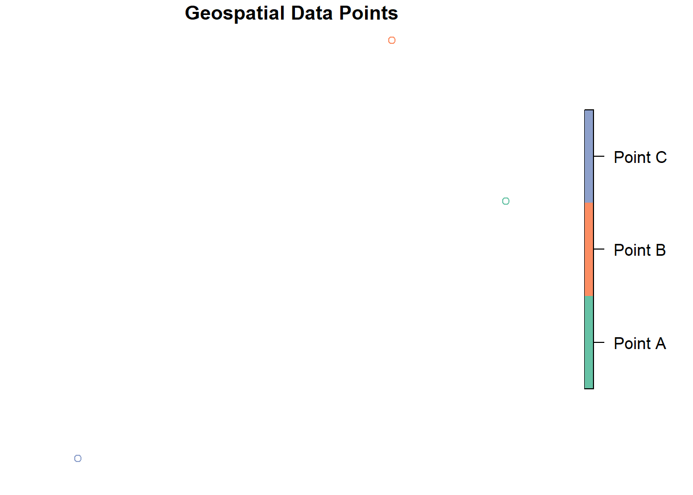
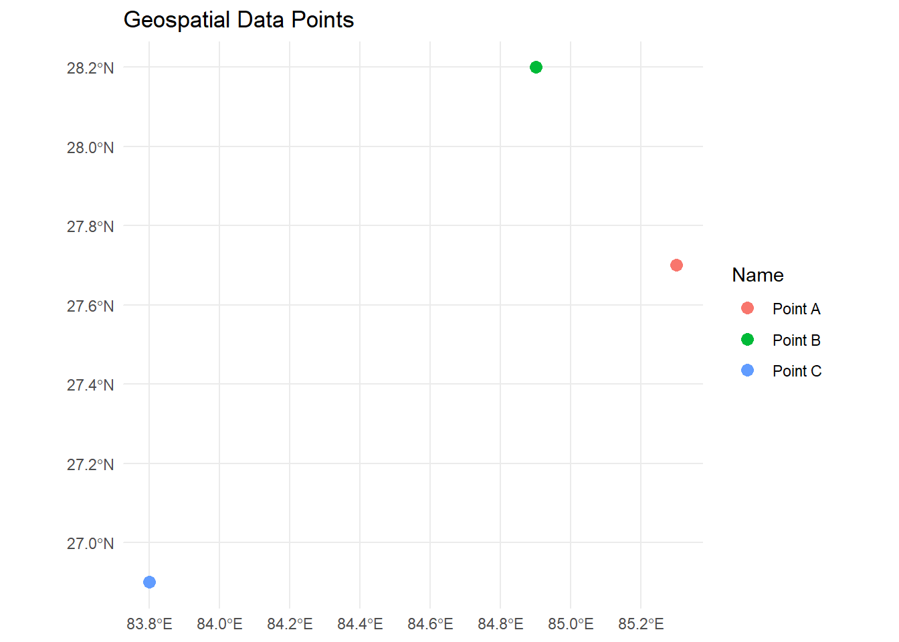
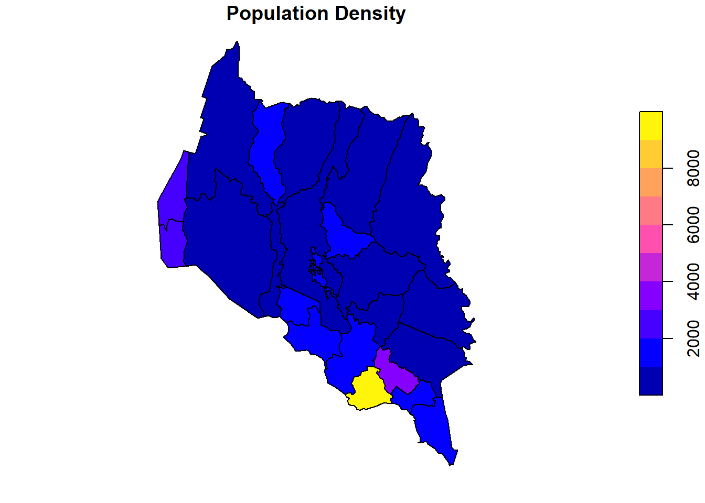
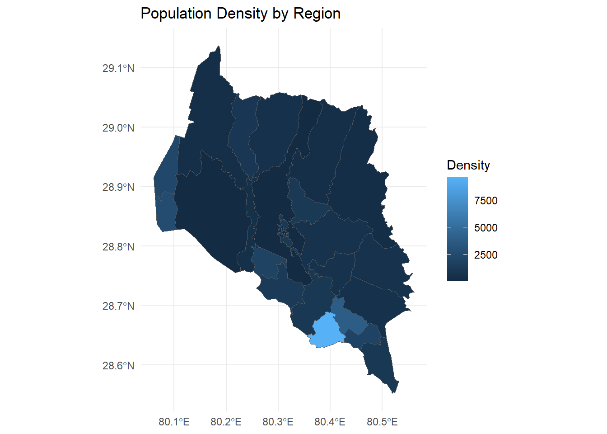
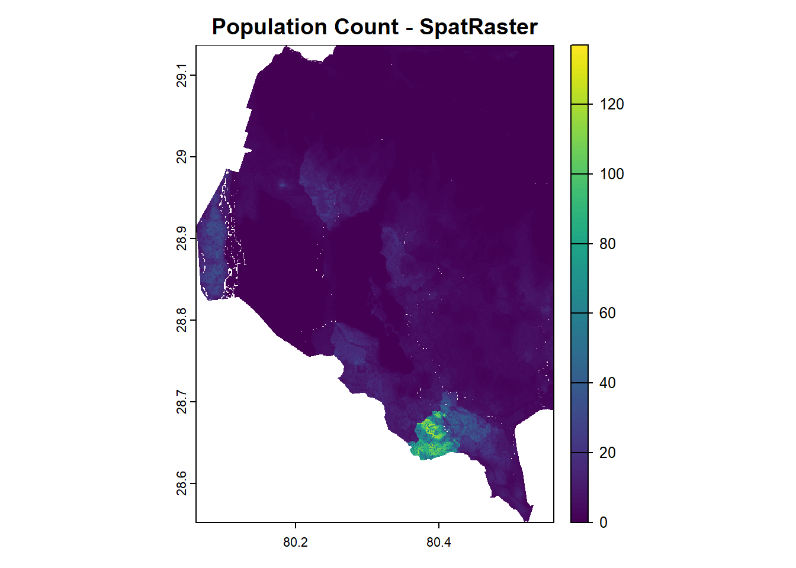
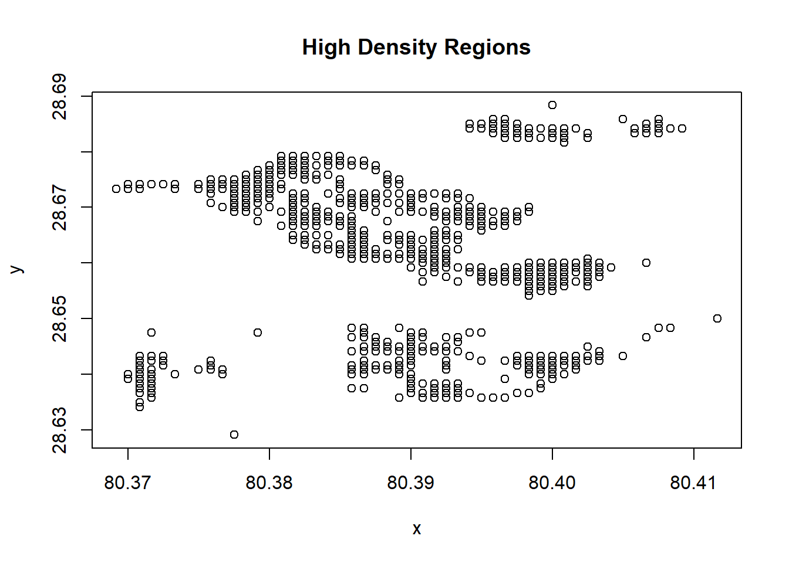
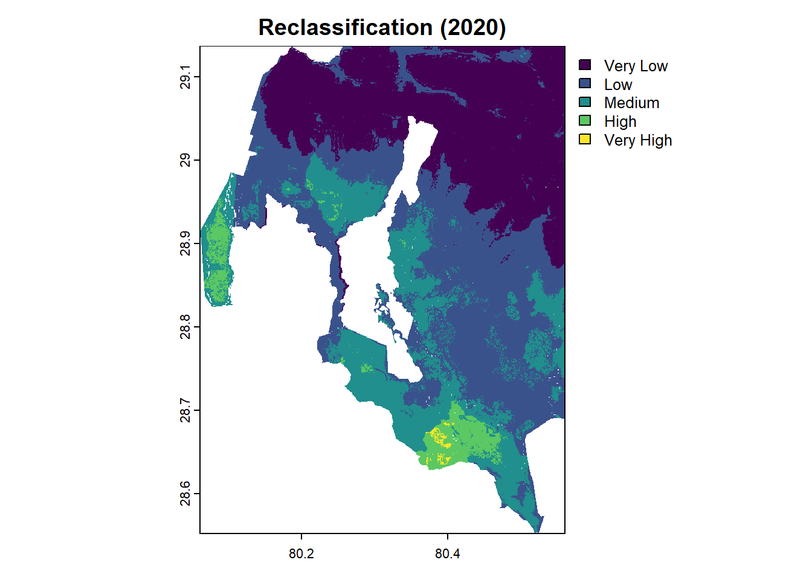
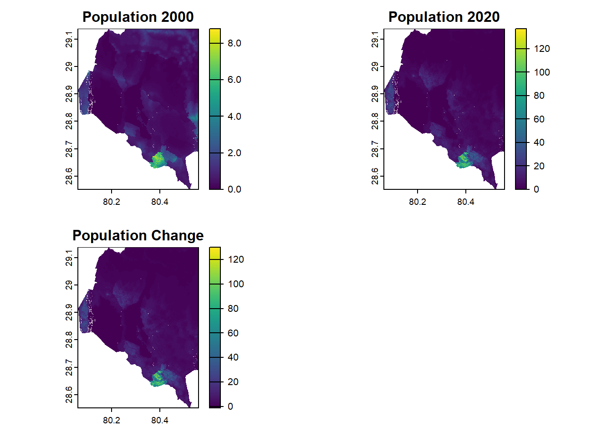

Data Frames in R
Last updated: 2025-01-02
Checks: 7 0
Knit directory: R_tutorial/
This reproducible R Markdown analysis was created with workflowr (version 1.7.1). The Checks tab describes the reproducibility checks that were applied when the results were created. The Past versions tab lists the development history.
Great! Since the R Markdown file has been committed to the Git repository, you know the exact version of the code that produced these results.
Great job! The global environment was empty. Objects defined in the global environment can affect the analysis in your R Markdown file in unknown ways. For reproduciblity it’s best to always run the code in an empty environment.
The command set.seed(20241223) was run prior to running
the code in the R Markdown file. Setting a seed ensures that any results
that rely on randomness, e.g. subsampling or permutations, are
reproducible.
Great job! Recording the operating system, R version, and package versions is critical for reproducibility.
Nice! There were no cached chunks for this analysis, so you can be confident that you successfully produced the results during this run.
Great job! Using relative paths to the files within your workflowr project makes it easier to run your code on other machines.
Great! You are using Git for version control. Tracking code development and connecting the code version to the results is critical for reproducibility.
The results in this page were generated with repository version bb5cb61. See the Past versions tab to see a history of the changes made to the R Markdown and HTML files.
Note that you need to be careful to ensure that all relevant files for
the analysis have been committed to Git prior to generating the results
(you can use wflow_publish or
wflow_git_commit). workflowr only checks the R Markdown
file, but you know if there are other scripts or data files that it
depends on. Below is the status of the Git repository when the results
were generated:
Ignored files:
Ignored: .Rhistory
Ignored: .Rproj.user/
Note that any generated files, e.g. HTML, png, CSS, etc., are not included in this status report because it is ok for generated content to have uncommitted changes.
These are the previous versions of the repository in which changes were
made to the R Markdown (analysis/Data_Frames.Rmd) and HTML
(docs/Data_Frames.html) files. If you’ve configured a
remote Git repository (see ?wflow_git_remote), click on the
hyperlinks in the table below to view the files as they were in that
past version.
| File | Version | Author | Date | Message |
|---|---|---|---|---|
| Rmd | bb5cb61 | Ohm-Np | 2025-01-02 | wflow_publish("analysis/Data_Frames.Rmd") |
| html | 38ca5cc | Ohm-Np | 2025-01-02 | Build site. |
| Rmd | c7a11f6 | Ohm-Np | 2025-01-02 | wflow_publish("analysis/Data_Frames.Rmd") |
| html | 8ea917f | Ohm-Np | 2025-01-02 | Build site. |
| Rmd | f7832cd | Ohm-Np | 2025-01-02 | wflow_publish("analysis/Data_Frames.Rmd") |
| html | d11d577 | Ohm-Np | 2025-01-01 | Build site. |
| Rmd | 1782ac4 | Ohm-Np | 2025-01-01 | wflow_publish("analysis/Data_Frames.Rmd") |
What is a Data Frame?
Data frames are a cornerstone of data manipulation and analysis in R, designed for handling tabular data efficiently. They are two-dimensional, rectangular structures where rows represent observations and columns represent variables. Each column is a vector of equal length, allowing for the storage of mixed data types such as numerical, character, or logical values. Analogous to spreadsheets or SQL tables, data frames are indispensable in tasks like statistical analysis, data visualization, and machine learning.
Key characteristics of data frames:
- Columns can contain different data types (e.g., numeric, character, factor).
- Rows represent individual observations or cases.
- Data frames can hold large datasets efficiently.
Creating Data Frames
We can create a data frame in R using the data.frame()
function from base R. Here’s an example:
# Creating a data frame
students <- data.frame(
Name = c("Amrit", "Ishwor", "Indra", "Rakshya"),
Age = c(27, 24, 21, 25),
Grade = c("A", "B", "A", "B"),
Major = c("Maths", "Science", "Maths", "Science")
)
# Display the data frame
print(students) Name Age Grade Major
1 Amrit 27 A Maths
2 Ishwor 24 B Science
3 Indra 21 A Maths
4 Rakshya 25 B ScienceAccessing and Modifying Data
Selecting Rows and Columns
We can access elements of a data frame using indexing, column names, or logical conditions.
# Access a specific column
students$Name[1] "Amrit" "Ishwor" "Indra" "Rakshya"# Access a specific row
students[1, ] Name Age Grade Major
1 Amrit 27 A Maths# Access a specific value
students[2, "Grade"][1] "B"Adding and Removing Columns
We can add a new column to a data frame dynamically or remove an existing column.
# Adding a new column
students$Passed <- c(TRUE, FALSE, TRUE, FALSE)
# Display the data frame
print(students) Name Age Grade Major Passed
1 Amrit 27 A Maths TRUE
2 Ishwor 24 B Science FALSE
3 Indra 21 A Maths TRUE
4 Rakshya 25 B Science FALSE# Removing a column
students$Grade <- NULL
# Display the data frame
print(students) Name Age Major Passed
1 Amrit 27 Maths TRUE
2 Ishwor 24 Science FALSE
3 Indra 21 Maths TRUE
4 Rakshya 25 Science FALSEData Frame Operations
Filtering and Subsetting
We can filter rows based on conditions using logical operators.
# Filter students with Age > 22
students[students$Age > 22, ] Name Age Major Passed
1 Amrit 27 Maths TRUE
2 Ishwor 24 Science FALSE
4 Rakshya 25 Science FALSESorting and Reordering
Sorting a data frame is straightforward with the order()
function.
# Sort by Age
students <- students[order(students$Age), ]
# Display the data frame
print(students) Name Age Major Passed
3 Indra 21 Maths TRUE
2 Ishwor 24 Science FALSE
4 Rakshya 25 Science FALSE
1 Amrit 27 Maths TRUESummary and Statistical Functions
R provides built-in functions to summarize and analyze data frames.
# Summary statistics
summary(students) Name Age Major Passed
Length:4 Min. :21.00 Length:4 Mode :logical
Class :character 1st Qu.:23.25 Class :character FALSE:2
Mode :character Median :24.50 Mode :character TRUE :2
Mean :24.25
3rd Qu.:25.50
Max. :27.00 # Number of rows and columns
nrow(students)[1] 4ncol(students)[1] 4Aggregation and Grouping
The dplyr package functions enable grouping and
summarization.
# Load dplyr package
library(dplyr)
# grouping
students %>%
group_by(Major) %>%
summarise(Average_Age = mean(Age))# A tibble: 2 × 2
Major Average_Age
<chr> <dbl>
1 Maths 24
2 Science 24.5So far, this chapter has introduced you to the versatility and power of data frames in R, laying the foundation for data manipulation and analysis. Now, we will delve into data frames specifically designed for geospatial data.
Geospatial Data Frames
A Geospatial Data Frame (GDF) extends a standard data frame by including a geometry column, which stores spatial data in formats such as points, lines, and polygons. This integration of spatial and attribute data makes geospatial data frames ideal for spatial analysis and mapping.
The sf package represents geospatial data frames as
sf objects, offering seamless compatibility with other R
packages for geospatial and statistical analysis.
Geometry is central to geospatial data frames, defining the spatial features associated with each observation. Each row corresponds to a spatial feature with related attributes, and the geometry column typically stores spatial data in Well-Known Text (WKT) or binary format.
Creating GDF
You can create a geospatial data frame using the st_as_sf() function from the sf package. Here’s an example:
library(sf)
# Create a data frame with spatial data
data <- data.frame(
Name = c("Point A", "Point B", "Point C"),
Latitude = c(27.7, 28.2, 26.9),
Longitude = c(85.3, 84.9, 83.8)
)
# Convert to an sf object
geo_data <- st_as_sf(
data,
coords = c("Longitude", "Latitude"),
crs = 4326 # WGS 84 Coordinate Reference System
)
print(geo_data)Simple feature collection with 3 features and 1 field
Geometry type: POINT
Dimension: XY
Bounding box: xmin: 83.8 ymin: 26.9 xmax: 85.3 ymax: 28.2
Geodetic CRS: WGS 84
Name geometry
1 Point A POINT (85.3 27.7)
2 Point B POINT (84.9 28.2)
3 Point C POINT (83.8 26.9)Manipulating GDF
Spatial Queries
Geospatial data frames support operations like spatial filtering and proximity analysis.
# Define a bounding box and convert it to an sfc object
bbox <- st_bbox(c(xmin = 84, ymin = 27, xmax = 86, ymax = 29),
crs = st_crs(geo_data))
bbox_polygon <-
st_as_sfc(bbox)
# Filter points within a specific bounding box
filtered_data <-
geo_data[st_within(geo_data,
bbox_polygon,
sparse = FALSE),
]
print(filtered_data)Simple feature collection with 2 features and 1 field
Geometry type: POINT
Dimension: XY
Bounding box: xmin: 84.9 ymin: 27.7 xmax: 85.3 ymax: 28.2
Geodetic CRS: WGS 84
Name geometry
1 Point A POINT (85.3 27.7)
2 Point B POINT (84.9 28.2)Attribute-Based Operations
Just like standard data frames, we can manipulate attributes in geospatial data frames.
# Add a new column
geo_data$Elevation <-
c(1500, 2000, 1700)
print(geo_data)Simple feature collection with 3 features and 2 fields
Geometry type: POINT
Dimension: XY
Bounding box: xmin: 83.8 ymin: 26.9 xmax: 85.3 ymax: 28.2
Geodetic CRS: WGS 84
Name geometry Elevation
1 Point A POINT (85.3 27.7) 1500
2 Point B POINT (84.9 28.2) 2000
3 Point C POINT (83.8 26.9) 1700Visualization of GDF
Geospatial data frames can be visualized using the
plot() function from the sf package or
integrated with advanced visualization libraries such as
ggplot2.
plot(geo_data["Name"],
main = "Geospatial Data Points")
| Version | Author | Date |
|---|---|---|
| 8ea917f | Ohm-Np | 2025-01-02 |
For enhanced visualization, we can use geom_sf() in
ggplot2.
library(ggplot2)
ggplot(data = geo_data) +
geom_sf(aes(color = Name), size = 3) +
labs(title = "Geospatial Data Points") +
theme_minimal()
| Version | Author | Date |
|---|---|---|
| 8ea917f | Ohm-Np | 2025-01-02 |
This approach allows you to set individual colors based on the Name attribute or other properties and provides more control over styling.
Geospatial data frames bridge the gap between tabular data and spatial analysis, making them indispensable for modern geospatial workflows. Their versatility, combined with R’s ecosystem of geospatial packages, provides an efficient and intuitive way to analyze and visualize spatial data.
sf Object
You have already been introduced to several operations that can be performed on vector data. Since sf objects are a type of data frame, many of the operations covered in earlier chapters will also be useful in this subsection. However, our focus here will be on the tabular properties of sf objects rather than their spatial properties.
This subsection will guide you in working with an sf
object, using geospatial data for the Kanchanpur district in Nepal,
extracted from GADM website. To access the data in .gpkg
format, visit the Downloads
section of this tutorial. The sf package in R seamlessly integrates
geospatial data with data frame functionality, enabling both spatial and
tabular operations.
Structure
The sf object contains both the geometry column and attribute data.
library(sf)
library(dplyr)
# Import the sf object
kpr <- read_sf("data/vector/kanchanpur.gpkg")
# View the structure of the sf object
str(kpr)sf [21 × 2] (S3: sf/tbl_df/tbl/data.frame)
$ NAME: chr [1:21] "BaisiBichawa" "Beldandi" "Chandani" "Daijee" ...
$ geom:sfc_MULTIPOLYGON of length 21; first list element: List of 1
..$ :List of 1
.. ..$ : num [1:62, 1:2] 80.5 80.5 80.5 80.5 80.5 ...
..- attr(*, "class")= chr [1:3] "XY" "MULTIPOLYGON" "sfg"
- attr(*, "sf_column")= chr "geom"
- attr(*, "agr")= Factor w/ 3 levels "constant","aggregate",..: NA
..- attr(*, "names")= chr "NAME"# Display the first few rows
head(kpr)Simple feature collection with 6 features and 1 field
Geometry type: MULTIPOLYGON
Dimension: XY
Bounding box: xmin: 80.06014 ymin: 28.64567 xmax: 80.55588 ymax: 29.05851
Geodetic CRS: WGS 84
# A tibble: 6 × 2
NAME geom
<chr> <MULTIPOLYGON [°]>
1 BaisiBichawa (((80.49934 28.64667, 80.49709 28.64866, 80.49709 28.65089, 80.4…
2 Beldandi (((80.25229 28.75782, 80.25377 28.7646, 80.25588 28.76808, 80.25…
3 Chandani (((80.10973 28.98432, 80.10986 28.97376, 80.10738 28.96319, 80.1…
4 Daijee (((80.34424 29.05416, 80.34449 29.04956, 80.34698 29.04397, 80.3…
5 Dekhatbhuli (((80.44701 28.78921, 80.43608 28.78623, 80.4316 28.78623, 80.42…
6 Dodhara (((80.10042 28.88838, 80.09917 28.87645, 80.10327 28.87297, 80.1…This reveals both the geometry type (e.g., POLYGON) and the associated attributes if there’s any.
Adding New Columns
You can add columns to the sf object just like in a standard data frame:
# Add a new column - Population
kpr$Population <-
c(37900, 46565, 72813, 49223, 52221, 64436, 40823,
97216, 36368, 277108, 51835, 38199, 46773, 44571,
48838, 11581, 131, 19211, 56755, 58257, 37573)Arithmetic Computation
The sf object makes it easy to compute the area of geometries using
st_area() and eases several other arithmetic
operations.
# Calculate the area of the district
kpr$area_km2 <- as.numeric(st_area(kpr)) / 1e6
# Add a new column with density (population/area)
kpr$density <- kpr$Population / kpr$area_km2Selecting and Filtering
You can filter the data using standard data frame operations:
# Select specific columns
selected_data <-
kpr[, c("NAME", "Population")]
# Display the first few rows
head(selected_data)Simple feature collection with 6 features and 2 fields
Geometry type: MULTIPOLYGON
Dimension: XY
Bounding box: xmin: 80.06014 ymin: 28.64567 xmax: 80.55588 ymax: 29.05851
Geodetic CRS: WGS 84
# A tibble: 6 × 3
NAME Population geom
<chr> <dbl> <MULTIPOLYGON [°]>
1 BaisiBichawa 37900 (((80.49934 28.64667, 80.49709 28.64866, 80.49709 28.…
2 Beldandi 46565 (((80.25229 28.75782, 80.25377 28.7646, 80.25588 28.7…
3 Chandani 72813 (((80.10973 28.98432, 80.10986 28.97376, 80.10738 28.…
4 Daijee 49223 (((80.34424 29.05416, 80.34449 29.04956, 80.34698 29.…
5 Dekhatbhuli 52221 (((80.44701 28.78921, 80.43608 28.78623, 80.4316 28.7…
6 Dodhara 64436 (((80.10042 28.88838, 80.09917 28.87645, 80.10327 28.…# Filter rows based on attribute values
filtered_data <-
kpr[kpr$Population > 50000, ]
# Display the filtered data
tibble(filtered_data)# A tibble: 8 × 5
NAME geom Population area_km2 density
<chr> <MULTIPOLYGON [°]> <dbl> <dbl> <dbl>
1 Chandani (((80.10973 28.98432, 80.10986 … 72813 32.2 2260.
2 Dekhatbhuli (((80.44701 28.78921, 80.43608 … 52221 90.4 578.
3 Dodhara (((80.10042 28.88838, 80.09917 … 64436 24.6 2615.
4 Kalika (((80.42626 28.65064, 80.42104 … 97216 25.5 3820.
5 Laxmipur (((80.42626 28.65064, 80.42949 … 277108 28.9 9596.
6 MahendranagarN.P. (((80.22357 29.05677, 80.2196 2… 51835 171. 302.
7 Sreepur (((80.34809 28.73316, 80.3589 2… 56755 55.6 1021.
8 Suda (((80.22357 29.05677, 80.22581 … 58257 57.7 1010.Grouping and Summarizing
Grouping and summarizing operations are common in data analysis. You can group data based on an attribute and calculate summary statistics for each group.
# Group by region and calculate total population
region_summary <- kpr %>%
group_by(NAME) %>%
summarize(
total_population = sum(Population, na.rm = TRUE),
average_density = mean(density, na.rm = TRUE)
)
print(region_summary)Simple feature collection with 21 features and 3 fields
Geometry type: GEOMETRY
Dimension: XY
Bounding box: xmin: 80.06014 ymin: 28.55172 xmax: 80.5611 ymax: 29.13732
Geodetic CRS: WGS 84
# A tibble: 21 × 4
NAME total_population average_density geom
<chr> <dbl> <dbl> <POLYGON [°]>
1 BaisiBichawa 37900 513. ((80.50716 28.64567, 80.50793 …
2 Beldandi 46565 1886. ((80.25449 28.75609, 80.26359 …
3 Chandani 72813 2260. ((80.10191 28.98643, 80.09772 …
4 Daijee 49223 483. ((80.34163 29.05453, 80.3374 2…
5 Dekhatbhuli 52221 578. ((80.45223 28.7917, 80.45571 2…
6 Dodhara 64436 2615. ((80.08799 28.88962, 80.08339 …
7 Jhalari 40823 335. ((80.45695 29.03515, 80.44527 …
8 Kalika 97216 3820. ((80.43546 28.66121, 80.45385 …
9 Krishnapur 36368 220. ((80.40638 28.85793, 80.41743 …
10 Laxmipur 277108 9596. ((80.42104 28.65388, 80.41682 …
# ℹ 11 more rowsgroup_by(): Groups the data based on a specified column.summarize(): Calculates summary statistics for each group.
Pivoting and Reshaping
Use pivot_longer() or pivot_wider() from
the tidyr package to reshape the sf object.
library(tidyr)
# Pivot attributes into long format
long_format <- kpr %>%
st_drop_geometry() %>%
pivot_longer(cols = c("Population", "density"),
names_to = "attribute",
values_to = "value")
head(long_format)# A tibble: 6 × 4
NAME area_km2 attribute value
<chr> <dbl> <chr> <dbl>
1 BaisiBichawa 73.9 Population 37900
2 BaisiBichawa 73.9 density 513.
3 Beldandi 24.7 Population 46565
4 Beldandi 24.7 density 1886.
5 Chandani 32.2 Population 72813
6 Chandani 32.2 density 2260.st_drop_geometry(): Temporarily removes geometry to focus on tabular operations.
Visualization
Use the plot() function for a quick visualization:
plot(kpr["density"],
main = "Population Density")
| Version | Author | Date |
|---|---|---|
| 38ca5cc | Ohm-Np | 2025-01-02 |
For advanced visualization:
ggplot(kpr) +
geom_sf(aes(fill = density)) +
labs(title = "Population Density by Region", fill = "Density") +
theme_minimal()
| Version | Author | Date |
|---|---|---|
| 38ca5cc | Ohm-Np | 2025-01-02 |
SpatRaster Object
A SpatRaster object loaded through the
terra package is not a data frame; it is a specialized data
structure designed to store raster data efficiently. However, you can
convert it into a data frame for analysis or integration with other
data.
Converting SpatRaster to a DF
You can use the as.data.frame() function to convert a SpatRaster object into a data frame. By default, this creates a data frame with the raster cell values. Optionally, you can include the spatial coordinates of each cell.
Example 1: Conversion Without Coordinates
If you only need the raster cell values:
library(terra)
# Create a SpatRaster
r <- rast(nrows = 10, ncols = 10)
# Assign random values to each cell (e.g., random values between 0 and 200)
values(r) <-
runif(ncell(r), min = 0, max = 200)
# View our raster
plot(r,
main = "SpatRaster")
| Version | Author | Date |
|---|---|---|
| 38ca5cc | Ohm-Np | 2025-01-02 |
# Convert to data frame
df <- as.data.frame(r, na.rm = FALSE)
head(df) lyr.1
1 24.20204
2 187.91961
3 102.09169
4 156.97450
5 117.43321
6 15.16255In this example:
ncell(r)gives the total number of cells in the raster.runif()generates random values between the specified min (0) and max (100) for each cell.
This results in a data frame where each column corresponds to a layer
in the SpatRaster.
Example 2: Conversion with Coordinates
To include the spatial coordinates for each cell:
# Convert to data frame with coordinates
df_with_coords <- as.data.frame(r,
xy = TRUE,
na.rm = FALSE)
head(df_with_coords) x y lyr.1
1 -162 81 24.20204
2 -126 81 187.91961
3 -90 81 102.09169
4 -54 81 156.97450
5 -18 81 117.43321
6 18 81 15.16255xy = TRUE: Adds the x and y columns for the coordinates of each cell.na.rm = FALSE: Includes cells with NA values.
Summarize Raster Values
In this subsection, we will load the Population Count raster data for the year 2020, which can be accessed in the Downloads section of this tutorial.
# Load the SpatRaster
r <-
rast("data/raster/popCount_2020.tif")
# Plot the raster
plot(r,
main = "Population Count - SpatRaster")
| Version | Author | Date |
|---|---|---|
| 38ca5cc | Ohm-Np | 2025-01-02 |
We can calculate basic summary statistics (mean, median, min, max) to get an overview of the population distribution across the region.
Example 1: Summarize Population Count
summary_stats <- summary(values(r))
print(summary_stats) npl_ppp_2020_UNadj
Min. : 0.00
1st Qu.: 0.30
Median : 1.44
Mean : 4.41
3rd Qu.: 4.47
Max. :136.92
NA's :134636 Example 2: Calculating Mean Population Density
mean_population <- mean(values(r),
na.rm = TRUE)
print(mean_population)[1] 4.407501Identify High-Density Regions
You can extract specific regions of the raster where the population is above a certain threshold, which could be useful for identifying high-density areas.
# Identify cells where population is higher than a threshold
threshold <- 100
high_density_cells <- which(values(r) > threshold)
coordinates_high_density <- xyFromCell(r, high_density_cells)
# Number of cells having High-Density
length(high_density_cells)[1] 549# View few cells with coordinates with High-Density
head(coordinates_high_density) x y
[1,] 80.40000 28.68833
[2,] 80.39583 28.68583
[3,] 80.39667 28.68583
[4,] 80.40500 28.68583
[5,] 80.40750 28.68583
[6,] 80.39417 28.68500# Plot High_density cells
plot(coordinates_high_density,
main = "High Density Regions")
| Version | Author | Date |
|---|---|---|
| 38ca5cc | Ohm-Np | 2025-01-02 |
Classify Raster Data
If you want to categorize population counts (e.g., low, medium, high), you can reclassify the raster into classes.
# Reclassify the raster values
r_classified <- r
values(r_classified) <- cut(values(r), breaks = c(0, 1, 5, 20, 100, Inf),
labels = c("Very Low", "Low", "Medium", "High", "Very High"))
# Convert to a data frame with classification
df_classified <- as.data.frame(r_classified, xy = TRUE)
head(df_classified) x y npl_ppp_2020_UNadj
151 80.18583 29.13667 Low
152 80.18667 29.13667 Low
235 80.25583 29.13667 Low
236 80.25667 29.13667 Low
237 80.25750 29.13667 Low
238 80.25833 29.13667 LowChange Identification
If you have multiple rasters representing population data over different time periods, you can compute the changes in population between two periods.
Let’s load the Population Count raster data for the year 2000 as well, so we can compute the changes in population over a 20-year period. This data can be accessed in the Downloads section of this tutorial.
# Load population count raster for year 2000
r2 <-
rast("data/raster/popCount_2000.tif")
# Population change between years 2020 and 2000
population_change <- r - r2
summary(values(population_change)) npl_ppp_2020_UNadj
Min. : -1.20
1st Qu.: 0.00
Median : 1.18
Mean : 3.91
3rd Qu.: 4.02
Max. :129.98
NA's :134636 # View the reclassified raster
plot(r_classified, main = "Reclassification (2020)")
| Version | Author | Date |
|---|---|---|
| 38ca5cc | Ohm-Np | 2025-01-02 |
Visualization
To plot multiple rasters side by side in R, you can use the
terra package with par() to set up a grid of
plots. Here’s an example using the terra package and base R
plotting:
# Set up a plotting layout: 2 rows, 2 columns
par(mfrow = c(2, 2)) # 2 rows, 2 columns
# Plot each raster
plot(r2, main = "Population 2000")
plot(r, main = "Population 2020")
plot(population_change, main = "Population Change")
# Reset the plotting layout to default (1 plot)
par(mfrow = c(1, 1))
| Version | Author | Date |
|---|---|---|
| 38ca5cc | Ohm-Np | 2025-01-02 |
These are just a few ways you can manipulate raster data for insights into population distribution. The flexibility of raster data combined with tabular operations makes it a powerful tool for spatial and non-spatial analysis.
For this tutorial, this concludes the coverage of Data Frames in R. If you would like to explore additional examples, or need clarification on any of the steps covered, please visit the GitHub repository: R_tutorial and feel free to open an issue.
sessionInfo()R version 4.4.0 (2024-04-24 ucrt)
Platform: x86_64-w64-mingw32/x64
Running under: Windows 11 x64 (build 22631)
Matrix products: default
locale:
[1] LC_COLLATE=English_Germany.utf8 LC_CTYPE=English_Germany.utf8
[3] LC_MONETARY=English_Germany.utf8 LC_NUMERIC=C
[5] LC_TIME=English_Germany.utf8
time zone: Europe/Berlin
tzcode source: internal
attached base packages:
[1] stats graphics grDevices utils datasets methods base
other attached packages:
[1] terra_1.8-5 tidyr_1.3.1 ggplot2_3.5.1 sf_1.0-19
[5] dplyr_1.1.4 workflowr_1.7.1
loaded via a namespace (and not attached):
[1] gtable_0.3.5 xfun_0.47 bslib_0.8.0 processx_3.8.4
[5] callr_3.7.6 vctrs_0.6.5 tools_4.4.0 ps_1.8.1
[9] generics_0.1.3 tibble_3.2.1 proxy_0.4-27 fansi_1.0.6
[13] highr_0.11 pkgconfig_2.0.3 KernSmooth_2.23-22 lifecycle_1.0.4
[17] compiler_4.4.0 farver_2.1.2 stringr_1.5.1 git2r_0.33.0
[21] munsell_0.5.1 codetools_0.2-20 getPass_0.2-4 httpuv_1.6.15
[25] htmltools_0.5.8.1 class_7.3-22 sass_0.4.9 yaml_2.3.10
[29] later_1.3.2 pillar_1.9.0 jquerylib_0.1.4 whisker_0.4.1
[33] classInt_0.4-10 cachem_1.1.0 wk_0.9.4 tidyselect_1.2.1
[37] digest_0.6.36 stringi_1.8.4 purrr_1.0.2 labeling_0.4.3
[41] rprojroot_2.0.4 fastmap_1.2.0 grid_4.4.0 colorspace_2.1-1
[45] cli_3.6.3 magrittr_2.0.3 utf8_1.2.4 e1071_1.7-16
[49] withr_3.0.2 scales_1.3.0 promises_1.3.0 rmarkdown_2.28
[53] httr_1.4.7 evaluate_0.24.0 knitr_1.48 s2_1.1.7
[57] rlang_1.1.4 Rcpp_1.0.13 glue_1.7.0 DBI_1.2.3
[61] rstudioapi_0.16.0 jsonlite_1.8.8 R6_2.5.1 fs_1.6.4
[65] units_0.8-5